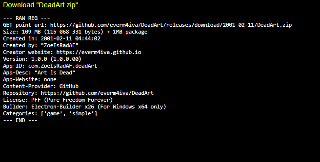

██████╗ ███████╗████████╗ ██████╗ ██████╗ ██╗███╗ ██╗████████╗
██╔════╝ ██╔════╝╚══██╔══╝ ██╔══██╗██╔═══██╗██║████╗ ██║╚══██╔══╝
██║ ███╗█████╗ ██║ ██████╔╝██║ ██║██║██╔██╗ ██║ ██║
██║ ██║██╔══╝ ██║ ██╔═══╝ ██║ ██║██║██║╚██╗██║ ██║
╚██████╔╝███████╗ ██║ ██║ ╚██████╔╝██║██║ ╚████║ ██║
╚═════╝ ╚══════╝ ╚═╝ ╚═╝ ╚═════╝ ╚═╝╚═╝ ╚═══╝ ╚═╝
Preview or download files here. Displaying all information about the file, author and advanced nerdy stuff - for personal use and personal distruibution

Preview of an get website, displaying all information about the file, author and advanced nerdy stuff
☆======= Url =========☆
The url is kept simple and direct, easy for sharing personal files around
https://everm4iva.github.io/get/ + "filename.ext"
☆======= Details shown =========☆
There are different types of files, and for each of them are shown different data structures.
For example: in "video" type files, are shown info such as framerate, speed, resolution, audio channels; In "file download" type, are just shown things about the author, packaging type, size, license...
Here is an example of a "video" type page contents.
--- RAW REG ---
GET point url: (private)
Short file name: Starl Teaser
Full file name: Starl-01-3-teaser.mp4
File description: Unreleased teaser for version a1.3 of Starl
Size: 120 MB (126 815 495 bytes)
Duration: 00:01:07
-- video --
Format: mpeg4
Frame width: 1920
Frame height: 1080
Date rate: 14943kbps
Total bitrate: 15137kbps
Frame rate: 30.00 fps
-- audio --
Audio bitrate: 14943kbps
Audio channels: 2 (stereo)
Audio sample rate: 44.100 kHz
-- media --
Year: 2026
Genre: -
-- origin --
Created in: 2026-07-08 16:23:24
Created by: "ZoeIsRadAF"
Creator website: https://everm4iva.github.io
Version: 1.0.0 (1.0.0.00)
License: -
Categories: ['video', '3d', 'teaser', 'media', 'preview']
--- END ---
And on top of those contents, it's the video itself. Natively playable on the page.
Extra note: video/media files can have preview or not. That's up to the creator of the page.
That's it :3 Nothing more to explain
I won't show files url because this is a page explaining what "/get" means, not a public download/preview point. Fuck u! (In a non-offensive way)